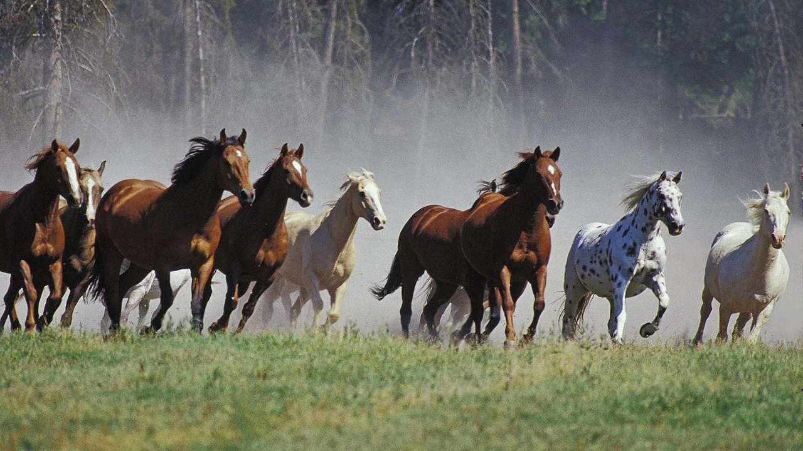

Cavalos para todas as ocasioes
Temos cavalos de todos os tamanhos cores e idades para voce

A T E N Ç Ã O **TABELA DE PREÇOS DE CAVALOS**
- Cavalo boliviano: R$ 700,00
- Cavalo russo: R$ 800,00
- Cavalo argentino: R$ 100,99
- Cavalo colombiano: R$ 200,00
Abissínio (Etiópia)
- Abtenauer (Austria)
- Cavalo baiano: R$ 100.000,00
- Cavalo normal: R$
- Akhal-Teke (Turcomenistão)
- Albanês / Kali shqiptar (Albânia)
- Altai (Ásia Central)
- Altai (Ásia Central)
- Alter-Real (Portugal)
- American Cream Draft (EUA)
- American Indian Horse (EUA)
- American Paint Horse (EUA)
- American Warmblood (EUA)
- Andravida (EUA)
- Andaluz (Andaluzia, Espanha)
- Adenberg-Nordkirchen (Alemanha)
- Anglo-Árabe (Reino Unido)
- Anglo-Árabe Sardo (Reino Unido)
- Anglo-Kabarda (Reino Unido)
- Appaloosa (EUA)
- AraAppaloosa (EUA)
- Árabe (Península Arábica)
- Árabo-frísio (Países Baixos)
- Ardennais (França)
- Asturcón (Espanha)
- Australian Draught Horse (Australia)
- Australian Stock Horse (Australia)
- Auvergne (França)
- Auxois (França)
- Avelin (Itália)
- Azerbaijano ( Azerbaijão)
- Azteca (México)
- Cavalo Rural: R$ 13,50
- Cavalo Cinza: R$ 2,50
- Baise (china)
- Balear (Espanha)
- Baixadeiro (Brasil)
- Balikun (China)
- Baluchi (Paquistão)
- Banker (EUA)
- Bávaro (Alemanha)
- Bardigiano (Itália)
- Basco de Montanha (Espanha)
- Berbere (Magreb)
- Bhutia (Índia)
- Bielorrusso de Tiro (Bielorrússia)
- Blazer (EUA)
- Boulonnais (França)
- Brabant Belga (Bélgica)
- Brandenburger (Alemanha)
- Brasileiro de hipismo
- Bretão (Bretanha, França)
- Brumby (Australia)
- Budyonny (Rússia)
- Burguete (Espanha)
- Cabardino (Rússia)
- Campeiro (Brasil)
- Campolina (Brasil)
- Clydesdale (Reino Unido)
- Crioulo (Rio Grande do Sul, Brasil)
- Drum (Estados Unidos)
- Falabella (Argentina)
- Floresta Negra (Alemanha)
- Frísio (Países Baixos)
- Garrano (Portugal)
- Gypsy Vanner (Reino Unido)
- Heck (Alemanha)
- Haflinger (Áustria)
- Holsteiner (Alemanha)
- isabel (Portugal)
- Islandês (Islândia)
- Konik (Polônia)
- Lipizzan (Eslovênia)
- Losino (Espanha)
- Kabarda (Rússia e Geórgia)
- Manga-larga marchador (Minas Gerais, Brasil)
- Manga-larga paulista (São Paulo, Brasil)
- Mangolino (Minas gerais, Brasil)
- Marajoara (Ilha de Marajó/Pará, Brasil)
- Maremmano (Itália)
- Marismeño (Espanha)
- Monterufolino (Itália)
- Mustang (selvagem) (América do Norte)
- Noriker (Austria)
- Oldemburgo (Alemanha)
- Paint Horse (EUA)
- Palomino (Portugal)
- Pantaneiro (Brasil)
- Pampa (Brasil)
- Percheron (Le Perche, França)
- Peruano de passo (Peru)
- Pônei brasileiro (Brasil)
- Pônei de Dülmen (Alemanha)
- Pônei Shetland (Reino Unido)
- Pura Raça Galega (PRG) (Espanha)
- Puro-sangue inglês (Inglaterra, Reino Unido)
- Puro-sangue lusitano (Portugal)
- Quarto de milha (EUA)
- Saddlebred americano (EUA)
- Shire (Reino Unido)
- Selle français (França)
- Sorraia (Portugal)
- Suffolk Punch (Reino Unido)